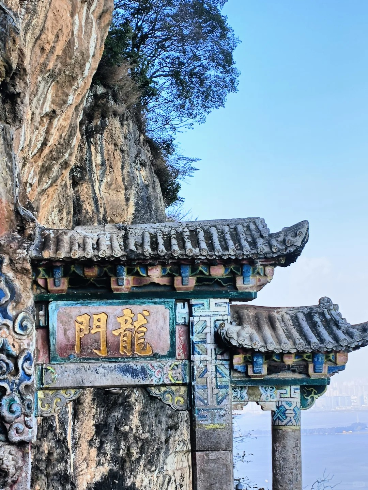
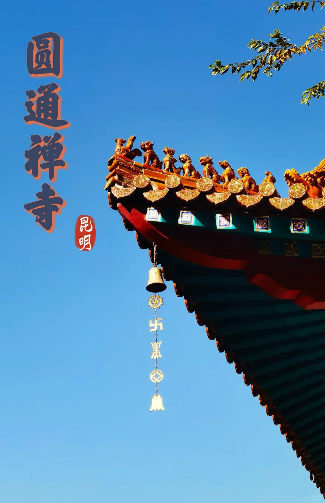
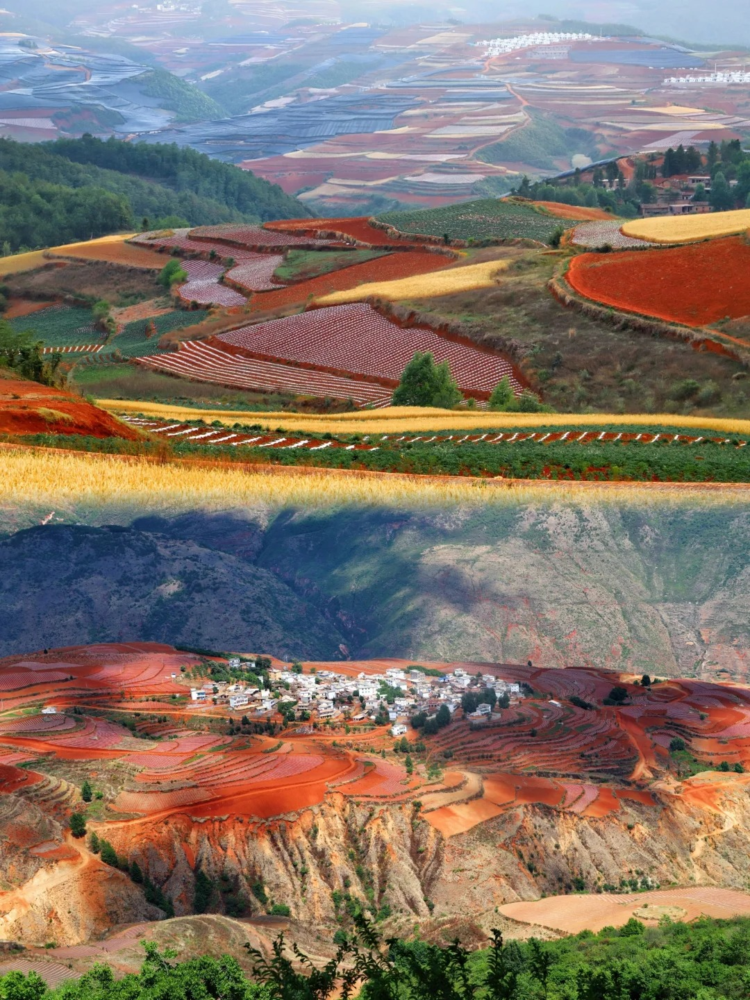

The Stone Forest
A spectacular set of limestone formations located in Shilin County. It features a mesmerizing maze of towering, needle-like limestone pillars that closely resemble a massive petrified forest, offering a surreal hiking experience.

Dianchi Lake
Widely honored as the "Pearl of the Plateau," this immense freshwater lake stretches across the city edge. It offers stunning sunset perspectives and serves as a vital winter sanctuary for tens of thousands of beautiful Siberian red-billed seagulls.

Green Lake Park
Cuihu Park is a tranquil urban sanctuary featuring emerald waters, seasonal blooming lotuses, and intricately designed classical pavilions. It perfectly encapsulates the relaxed, leisurely, and artistic lifestyle of local Kunming residents.

Western Hills
Affectionately termed the "Sleeping Beauty" due to their skyline silhouette. Xi Shan offers a dense, lush forested escape and a steep cliffside Dragon Gate, giving visitors a majestic panoramic view of the entire Dianchi Lake.

Yuantong Temple
With a history spanning over 1,200 years, this is the grandest and most indispensable Buddhist temple in Kunming. It distinctively features a massive pond at its center and elegantly blends architectural styles from various Chinese dynasties.

Dongchuan Red Land
Famed among photographers worldwide, this rural area showcases a visually striking and wildly colorful landscape of vivid red earth, terraced into dramatic geographical patterns alongside bright green agricultural crops.